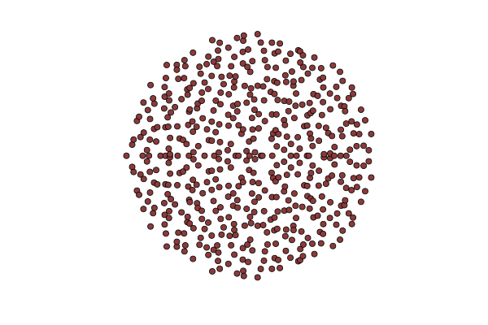
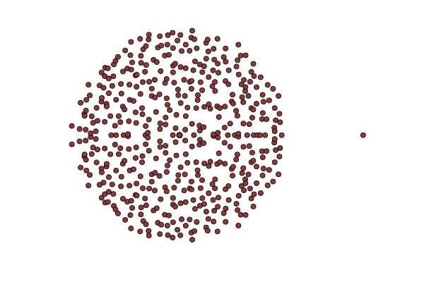

The characteristic polynomial of sparse zero-one matrices
Simon Coste - ENS
MEGA seminar - Toulouse, 21th oct.
Eigenvalues of non-Hermitian matrices
> using LinearAlgebra
> eigvals(randn(500,500))
Eigenvalues of random regular digraphs
> using LinearAlgebra, Erdos
> eigvals(random_regular_digraph(500, 3))
Bernoulli sparse matrices
> using LinearAlgebra
> eigvals(rand(500,500).<0.01)
A_n = an n \times n matrix whose entries are iid \mathrm{Bernoulli}(d/n) entries.
Reverse characteristic polynomial
q_n (z) = \det(I_n - zA_n)
The coefficients of q_n(z)=1+\Delta_1z+\Delta_2z^2+...+\Delta_{n}z^{n} are \Delta_k = (-1)^k \frac{P_k(\mathrm{trace}(A_n^1), ..., \mathrm{trace}(A_n^k))}{k!},
where the P_k are polynomials.
The simplest method: traces + tightness


The limits of the traces of A^k_n
For every k, (\mathrm{tr}(A_n^1), ..., \mathrm{tr}(A_n^k)) \xrightarrow[n \to \infty]{\mathrm{law}} (X_1, ... , X_k). where X_k := \sum_{\ell|k} \ell Y_\ell (Y_\ell : \ell \in \mathbb{N}^*) = family of independent r.v., Y_\ell \sim \mathrm{Poi}(d^\ell / \ell).
The limits of the coefficients of q_n
\Delta_k \to a_k = (-1)^k \frac{P_k(X_1, ... , X_k)}{k!} Let F be the log-generating function of these random variables: F(z) = 1 + \sum_{k=1}^\infty a_k z^k
Coefficients of q_n \to Coefficients of F
Do we have stronger convergence than that?
Weak convergence of analytic functions
If f_n is a sequence of random analytic functions in an open set D and if
The coeffs of f_n converge towards (a_k)
f_n is tight in D
Then f_n \to f where f(z) = \sum a_k z^k.
Tightness in holomorphic spaces
Let f_n be a sequence of random analytic functions: f_n(z) = \sum_{k=0}^\infty a_{n,k}z^k.
If there is a c such that \sup_n \mathbf{E}[|a_{n,k}|^2] \leqslant c r^k then (f_n) is tight on D(0,\sqrt{r}).
Tightness of (q_n)
The sequence q_n is tight in D(0,\sqrt{1/d}).
Proof. We must bound the 2-norm of the coefficients of q_n, the \Delta_k.
We use \Delta_k = \sum_{I \subset [n], |I|=k}\det(A(I)) then develop |\Delta_k|^2.
We get a double sum of \mathbf{E}[\det(A(I))\det(A(J))] with I,J subsets of [n].
The value of each summand depends on the size of I\cap J.
\mathbf{E}[|\Delta_k|^2] = (n)_k (d/n)^k (1-d/n)^{k-1}(1 - kd/n -p + kd - k^2d/n) =O(d^k)
q_n \to F as holomorphic functions on D(0,d^{-1/2}).

Elementary properties of F
F(z) = \exp \left( -\sum_{k=1}^\infty X_k \frac{z^k}{k} \right) = \prod_{k=1}^\infty (1 - z^k)^{Y_k}
The radius of convergence inside the exp is 1/d.
The radius of convergence of F is 1/\sqrt{d} and F has one zero at 1/d.
F has no other zeroes inside D(0,1/\sqrt{d}).
Zeroes of q_n => zeroes of F
The zeroes are continuous wrt weak convergence on \mathbb{H}.
Zeroes of q_n inside D(0,1/\sqrt{d}) = inverse of eigenvalues of A_n outside D(0,\sqrt{d}).
Asymptotically, A_n has one eigenvalue close to d.
The other ones are smaller than \sqrt{d}.
The Gaussian Holomorphic Chaos
G(z) = e^{-g(z)} \quad \text{where}\quad g(z) =\sum_{n=0}^\infty \red{\mathscr{N}_\mathbb{C}(0,1)}\frac{z^n}{\sqrt{n}} F(z) = e^{-f(z)} \quad \text{where}\quad f(z) = \sum_{n=0}^\infty \red{X_n} \frac{z^n}{n} Covariances: \mathrm{Cov}(g(z), g(w)) = -\log(1 - z\bar{w}) \mathrm{Cov}(f(z), f(w)) = -\sum_{n,m \geq 1} \frac{\log(1 - d z^n \bar{w}^m)}{nm}
Generating function for G
Najnudel, Paquette, Simm, 2020 + Diaconis, Gamburd, 2004
\mathbf{E} G(z_1)...G(z_k)\overline{G(w_1)...G(w_k)} = \prod_{i,j = 1}^k \frac{1}{1 - z_i w_j}
This is the Generating function of Magic Squares!
Note c_n the n-th coef of G.
\mathbf{E}[|c_n|^{2k}] = number of k\times k integer matrices whose rows/columns sum to n
Generating function for F
\mathbb{E} F(z_1)...F(z_k) = \frac{\prod_{S \subset [k] \text{ odd}} (1 - d\prod_{s \in S}z_s)}{ \prod_{S \subset [k], \text{ even}} (1 - d\prod_{s \in S}z_s)}
This is the generating function of… ?
Merci pour l’invitation !